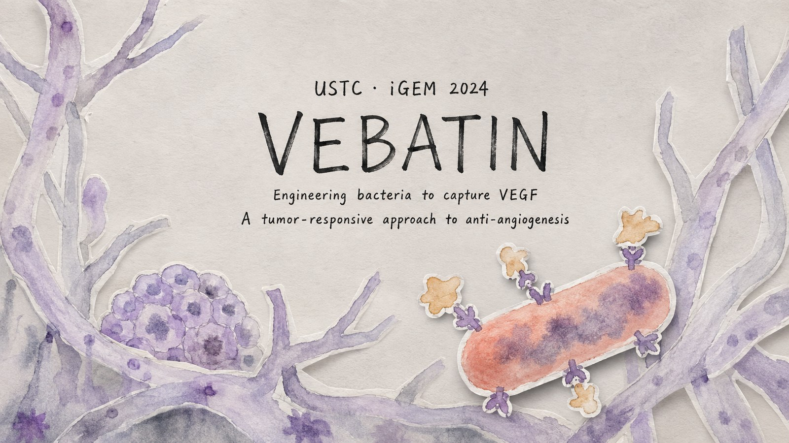

Inverse Folding
ABACUS-T-Mem
Closing the distribution gap that makes soluble-protein inverse-folding models fail on membrane protein backbones.

The problem
Mainstream inverse-folding models — ProteinMPNN, ABACUS-T, and others — are trained almost entirely on soluble proteins. Hand one a membrane protein backbone and it tends to generate hydrophilic sequences right through the transmembrane region, because that input is simply out of distribution.
Membrane proteins differ systematically: transmembrane surfaces are surrounded by lipid rather than water, so exposed residues must be hydrophobic, and tryptophan and tyrosine cluster at the membrane–water boundary to form the characteristic WY-ring. A model that has never seen this cannot invent it.
The common workaround is to hand-tune a hydrophobicity bias over the transmembrane region at inference. That works case by case but has no data-driven basis, and an imposed distribution can drift away from what native membrane proteins actually do. I wanted the model to learn the rule instead of being told it.
Data
Built a training set from PDBTM, which annotates membrane position geometrically rather than by sequence homology. Used TMDET 4.0 for membrane identification and membrane-plane annotation, then filtered on sequence clustering (30% identity), resolution (≤ 4 Å), and membrane width (25–40 Å) to keep the geometry trustworthy.
For evaluation I built a strictly independent test set: structures released after May 2025, homology-filtered against the training set, manually inspected in PyMOL — 129 proteins. Also mixed in AlphaFold Database predicted structures during training to mitigate overfitting on limited experimental data.
Method
Fine-tuned ABACUS-T with membrane depth encoded via radial basis functions, and reweighted the loss toward transmembrane structural features so the model became more sensitive to the region that actually differs.
Results
The headline number is a 2-point gain, but the informative part is where it landed. The interface region improved most (+3.8 points), the transmembrane core next (+3.0), and the aqueous region least (+1.3). That ordering is what you want: the model learned membrane-specific rules rather than gaining points uniformly. The aqueous region did not regress, so it also did not forget what it knew about soluble proteins.
Amino-acid composition shifted toward native membrane-protein statistics, with charged residues depleted and hydrophobic residues enriched at the interface, while aqueous-exposed regions kept their polar residues. Per-protein scatter showed 98 of 130 proteins above the diagonal with an even spread — consistent with general learning rather than a few homologous outliers inflating the mean.
From sequences to membranes: experimental validation
To assess whether the designed sequences were competent in vivo, we established a rational sequence-screening strategy. De novo transmembrane backbones were first generated with SCUBA-T, onto which ABACUS-T-Mem performed sequence design. Candidate sequences were then subjected to a hierarchical filtering pipeline: AlphaFold 3 structure prediction to verify that each designed sequence retained the intended backbone fold; explicit assessment of the WY-ring aromatic cluster; evaluation of loop topology against the positive-inside rule; and scoring of interface hydrophobicity relative to native membrane proteins. Over forty candidate sequences satisfied all screening criteria, of which two were selected for cellular expression.
Both designed proteins localized to the membrane, as verified independently by fluorescence microscopy and flow cytometry. This established an end-to-end workflow in which designed sequences proceed from in silico generation through multi-stage screening to experimentally confirmed membrane insertion.
What did not work, and why it mattered
Two problems survived fine-tuning: leucine was over-generated, and W/Y remained too sparse to reproduce the WY-ring. I compared several conditioning strategies against both:
- membrane background prior injection
- W/Y loss weighting
- classifier-free guidance (CFG)
- ControlNet-style side branches
- adaptive layer normalization (adaLN)
- cross-attention and gate modulation
Most did not help, and the diagnosis turned out to be more interesting than a win would have been. Membrane depth is a weak, noisy, continuous geometric signal, not a strong semantic label. CFG relies on a meaningful gap between conditional and unconditional predictions; here that gap is too small to steer generation, since even within the annotated interface, W and Y are not the majority.
ControlNet failed differently. With the backbone frozen the side branch could not drive the loss down; unfrozen, training converged but the injected signal was absorbed. Parameter-change analysis showed the ESM activation weights moving the most — the model was actively compensating for the new condition, treating it as noise rather than supervision.
Module-wise parameter analysis also pointed somewhere useful. All modules moved less than 2% with cosine similarity above 0.998, and the gradient ran input-end large, output-end small, with decoder shifting more than encoder. Structural geometry generalizes across soluble and membrane proteins; the sequence decision layer is where membrane specificity lives. So membrane information belongs near the decoder or output, not rewritten into the encoder — which is what pushed the work toward low-degree-of-freedom gating at the output logits.